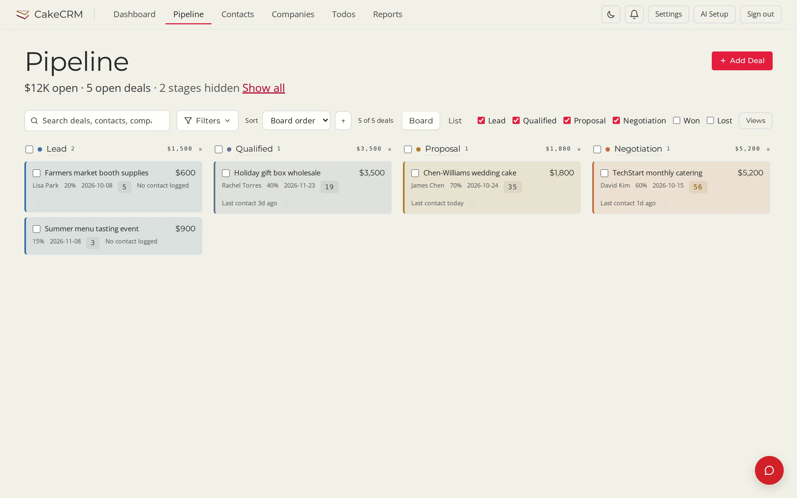
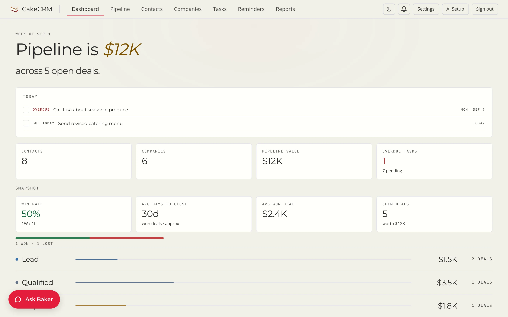
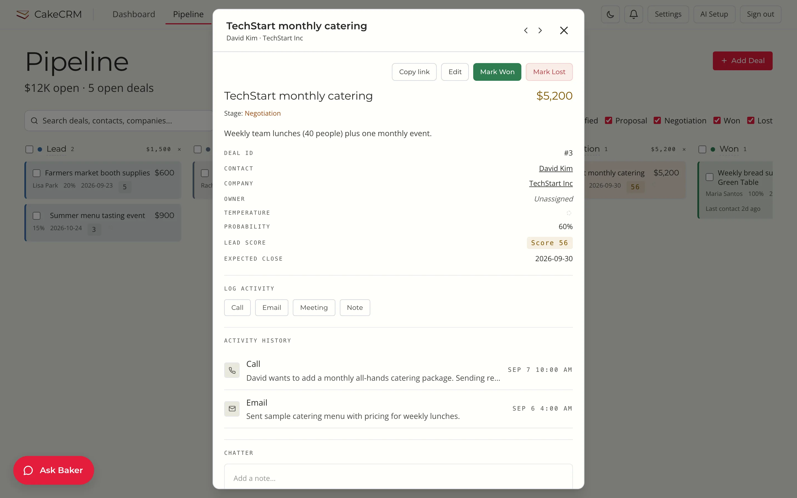
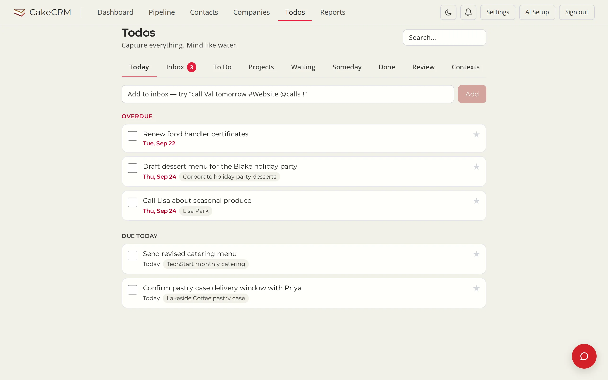
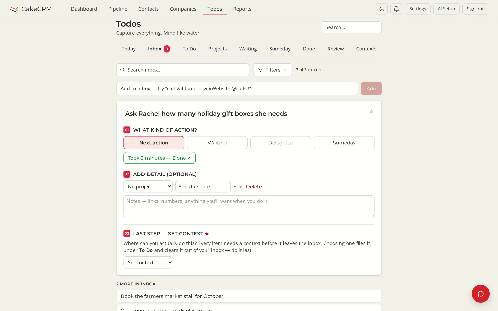

CakeCRM
The simple CRM.
A CRM so simple you can coach your team instead of just paying them more commission. Three screens your people will actually use — and an assistant that handles the busywork.
One click in the cloud, or on your own hardware. Works with no AI key at all.

actually uses
or the hundredth
you control
to run the CRM
// the tour
This is the whole thing.
No modules to buy, no admin console to learn. Four screens cover it — and two you can try right here.
Start with what needs you today.
The dashboard opens on a short Today list: the overdue call, the menu that goes out this afternoon. Under it, one pipeline number and the handful of stats that matter.

Your pipeline is a board. Drag the card.
Every open deal on one screen, in the stage it is in, with the value, the close date and the last contact on the card. Won and lost stay tucked away until you ask. A filter you keep coming back to becomes a saved view the whole team can use.
Open a deal. Everything is on one card.
Who, how much, how likely, when. The calls and emails so far, and a box to add a note. No tabs, no sub-pages, nothing hidden behind a settings gear.

Capture it, file it, do it.
A GTD-style inbox. Anything on your mind goes in — from your phone, through a no-login capture link — and stays there until you have said what kind of action it is and where you can do it. Try it below ↓


// try it · no sign-up
Todos that fit in your pocket.
This is CakeCRM's todo app, running live on this page. Capture it, file it, do it — anything on your mind goes in, even from your phone through a no-login capture link.
- Type naturally. “call Val tomorrow #Website @calls !” becomes a dated, starred todo with a project and a context.
- File from the Inbox in three steps: what kind of action, any detail, where you can do it.
- Today shows what is overdue or due. No AI key needed.
Say hello to Baker.
Your CRM sales assistant.
Optional — add any AI provider key and Baker reads the deal you have open, checks its health, and tells you the next step in plain words, grounded in what is actually on the card. It can log the call, put a follow-up draft in your Gmail Drafts, and nudge you when a deal goes quiet.
// what it is
Simple on purpose.
Built for small teams. Tested by bigger ones. It stays small because everything it leaves out is a thing your team never has to learn.
No per-seat fees
AGPL-3.0, free forever. Add your whole team with admin and member roles and pay nothing for the tenth seat.
Works with zero AI keys
The assistant is a feature you switch on, not a gate. Flip the switch to see what a key adds.
- Contacts & companies
- Pipeline board
- Todos & capture link
- Reports
- CSV import
- Saved team views
- Baker's next-step advice
- Gmail drafts
- Smart import
- Ask about any deal
Your data stays yours
One PostgreSQL database on a server you control. Back it up with pg_dump. Leave whenever you like and take everything with you.
Bring any model
Keys are entered in the app and encrypted at rest.
Reads email, never sends it
Baker can search your Gmail and put a draft in your Drafts folder for you to send.
Talk to it from your phone
Connect one Telegram bot; each person links their own chat.
// get it
Running in five minutes.
Three steps. The third one is optional.
Deploy
Click the Railway button and set a password. Railway provisions PostgreSQL and starts CakeCRM. Prefer your own hardware?
python run.py
Sign in
Load the sample data to look around, or import your contacts from CSV.
Hire Baker
Paste an AI provider key under AI Setup. Skip this step and the CRM is still the whole CRM.